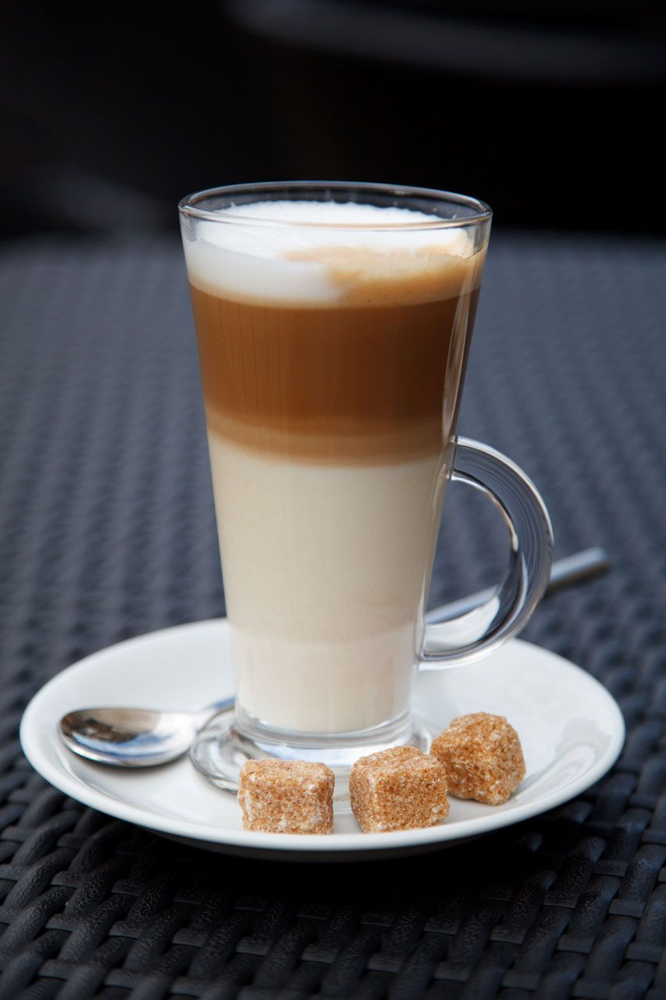
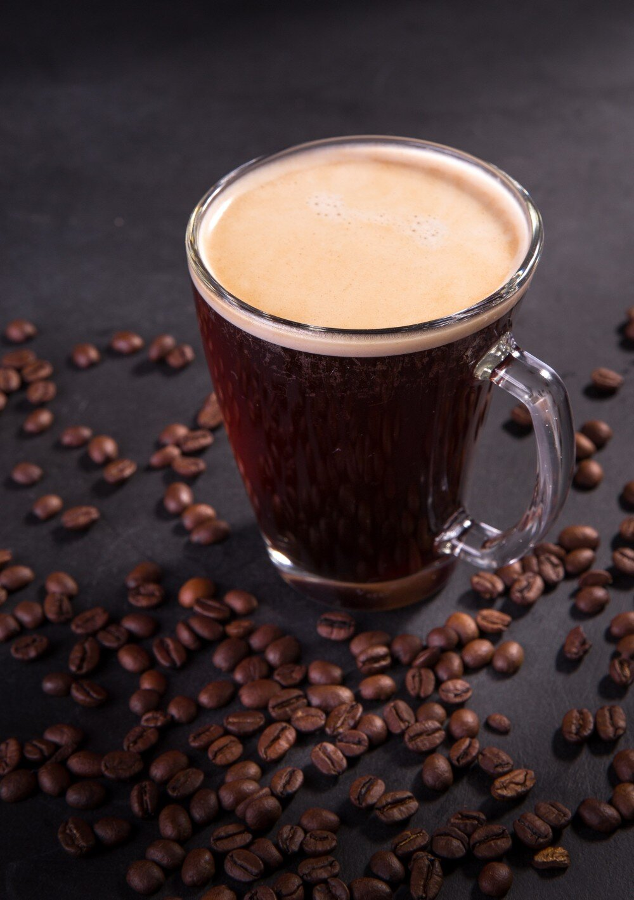
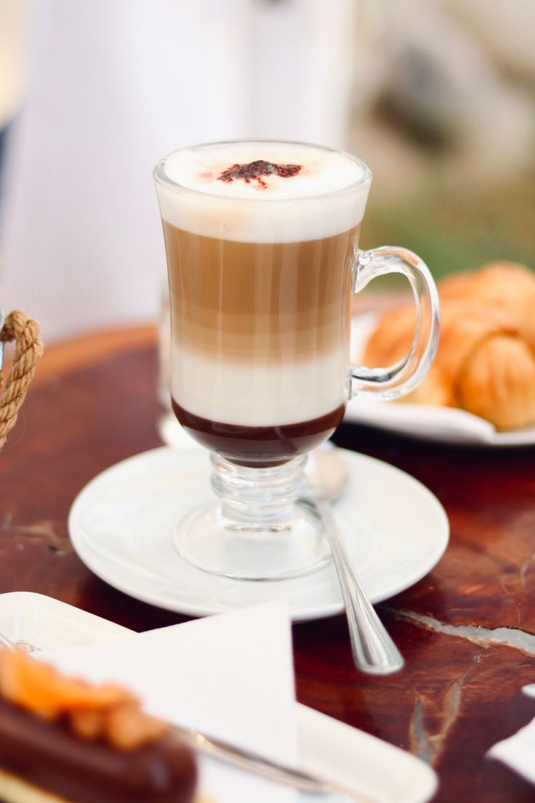
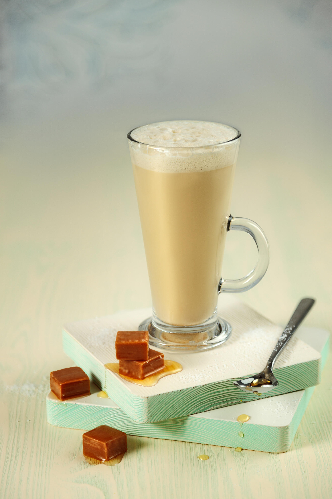
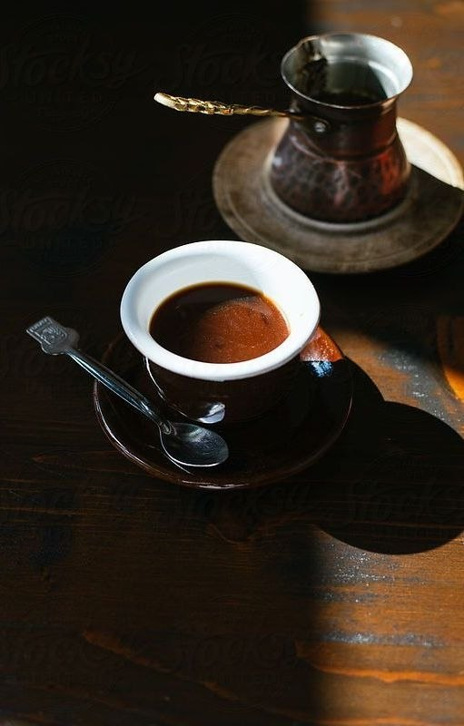
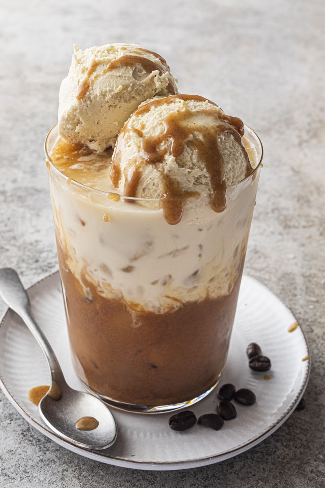
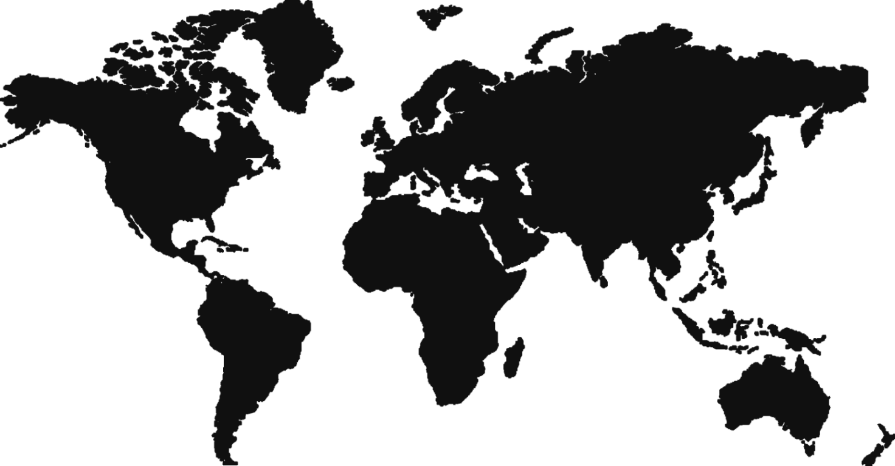
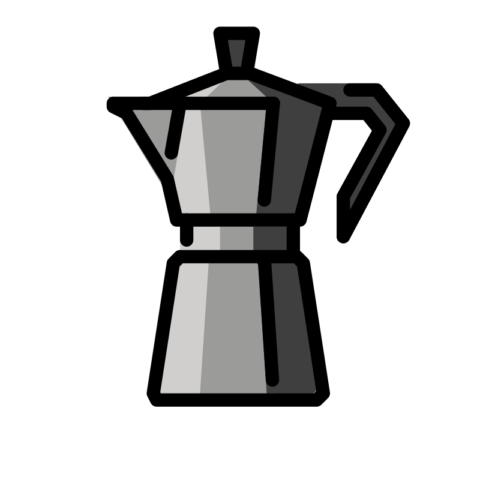
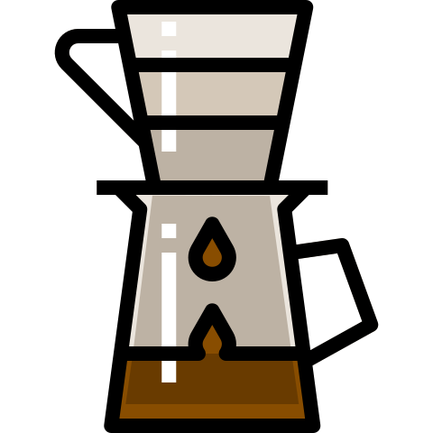
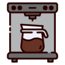

Какой кофе ищешь?
По способу приготовления
Эспрессо
Турка
Френч-пресс
Кофемашина
По крепости
Слабый
Средний
Крепкий
По стране происхождения
Италия
Турция
Франция
Россия

Эспрессо
Насыщенный концентрированный кофе с плотной пенкой
Крепость: Крепкий
Способ: Эспрессо
Страна: Италия

Латте
Мягкий кофе с большим количеством молока
Крепость: Слабый
Способ: Кофемашина
Страна: Италия

Капучино
Кофе с плотной молочной пенкой
Крепость: Средний
Способ: Кофемашина
Страна: Италия

Американо
Эспрессо, разбавленный горячей водой
Крепость: Средний
Способ: Эспрессо
Страна: Италия

Мокачино
Капучино с добавлением шоколада
Крепость: Средний
Способ: Кофемашина
Страна: Италия

Раф
Кофе со сливками и ванильным сахаром
Крепость: Средний
Способ: Кофемашина
Страна: Россия

Кофе по-турецки
Густой кофе, сваренный в турке с пряностями
Крепость: Крепкий
Способ: Турка
Страна: Турция

Гляссе
Холодный кофе с шариком мороженого
Крепость: Слабый
Способ: Кофемашина
Страна: Франция
Ничего не найдено
Где растёт кофе?

Как заварить идеальную чашку
Эспрессо

Турка
Френч-пресс

Воронка (пуровер)
